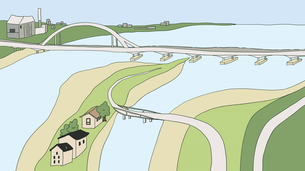

A collaborative research and video experiment that strategically injects research insights into climate adaptation policy discussions in the Netherlands and coastal cities threatened by sea level rise. Episode 3 evaluates climate adaptation pathways regarding their impact on biodiversity, soil degradation, subsidence, water quality, and land use policy effectiveness.

Project Poldergeist is a multi-episode research and video series examining how the Netherlands can defend itself against climate change. Each episode translates complex policy and scientific findings into accessible animated storytelling, designed to reach both public and policy audiences.
Episode 3 evaluates existing and proposed climate adaptation pathways across five dimensions: biodiversity impact, soil degradation, subsidence, water quality, and land use policy effectiveness.
Episode 3 was incorporated into the broader Project Poldergeist documentary series, which uses animated episodes to bring climate research into public and policy discourse. The project demonstrates how design and animation can serve as genuine instruments of research communication — not just illustration after the fact, but an active part of how ideas are tested and shared.